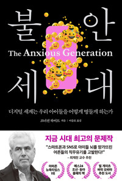

금요일 저녁, 조너선 하이트의 『불안세대』를 읽는 세 번째 모임이었다. 한 참석자가 가까운 가족 안에서 오래 지켜본 '대물림되는 불안' 이야기를 꺼내 놓으면서 모임은 초반부터 깊어졌고, 대화는 자녀의 디지털 기기를 언제까지 어떻게 막을 것인가 하는 각 가정의 결단, 결단한 사람들이 모여 문화를 만드는 공동체의 꿈, 그리고 어른인 우리 자신부터 붙들려 있는 '조금만 더'의 무한 검색으로 이어졌다. 책이 4부에서 제시하는 대안이 결국 지금 하고 있는 신앙생활의 내용과 닿아 있다는 발견 위에서, 진행자는 복음만이 사람을 현실로, 눈앞의 이웃에게로 돌려세운다는 결론으로 이야기를 모았다. 말미에는 단기선교가 선교지에 정말 도움이 되는지를 둘러싼 문답이 오갔고, 다음 책으로 『매혹적인 악덕들』이 예고되었다.
불안은 대물림되는가 — 과잉보호 가정의 풍경
모임의 문을 연 것은 한 참석자가 가까운 가족을 지켜보며 오래 품어 온 질문이었다. 부모의 높은 불안이 과잉보호와 감시형 양육으로 흘러가고, 그 아래서 자란 아이들이 저마다 정서적 어려움을 겪는 모습을 보며 '이 불안이 유전처럼 흘러내리는 게 아닌가' 하는 물음. 아이는 대학에 보내 놓고도 놓지 못하는 부모의 마음과, 정작 본인은 문제를 자각하지 못하는 안타까움이 함께 나눠졌다.
참석자들은 그런 가족을 어떻게 도울 수 있는지로 이야기를 이어 갔다. 치료가 필요하다고 직언하기보다 '네 마음이 힘든 것을 덜도록 돕고 싶다'고 다가가라는, 한 참석자가 전문가 강의에서 들은 조언이 공유됐다. 결국 사람의 힘으로는 안 되고 하나님이 역사하셔야 움직이더라는, 최근에 목격한 작은 변화의 소식이 첫 대화의 매듭이 되었다.
성인이 될 때까지 차단한다는 결단
화제는 자연스럽게 각 가정의 원칙으로 옮겨 갔다. 한 가정은 집에 TV를 두지 않고, 꼭 필요할 때만 성경 콘텐츠 영상 하나를 보여 주며, 성인이 될 때까지 스마트폰을 주지 않는 것을 목표로 삼고 있다고 했다. 아이들이 카톡으로 소통하는 초등학교에서 홀로 고립되는 것을 피하려 미디어를 쓰지 않는 대안학교까지 알아보고 있다는, 스스로 '힘든 육아를 선택했다'는 고백이었다.
반론과 현실론도 만만치 않았다. 학교 과제와 학원 공지가 전부 디지털로 오가는 구조에서 완전한 격리가 가능하냐는 것, 시간을 정해 줘도 술 한 잔이 두 잔 되듯 통제가 안 되더라는 경험담이 이어졌다. 저자가 법적 연령 제한까지 주장할 만큼 피해를 심각하게 본다는 점, 막지 않고 두면 아이가 스스로 위험을 조율하며 큰다는 안티프래질 개념, 문명의 이기를 덜 누릴수록 창의성이 오히려 자란다는 이야기가 책에서 근거로 소환됐다. 결론은 차단 자체가 아니라 그 시간에 더 창의적인 것을 하게 하는 것, 그리고 차단과 함께 영적 훈련이 가야 성인이 된 뒤 스스로 조절할 수 있다는 데로 모였다.
결단한 사람들이 모여 문화를 만든다
혼자서는 이 흐름을 거스르기 어렵다는 데 모두가 공감하자, 진행자는 오래 품어 온 꿈을 꺼냈다. 뜻이 맞는 가정들이 소박하게 모여 살며 함께 아이를 키우는 공동 주거, 청년들이 저렴하게 거주하며 1층에서 함께 예배드리는 학사 같은 거점의 그림이었다. 망설이던 유학을 저지르고 나니 길이 열리더라는 자신의 경험이 그 확신의 뿌리였다.
실제 사례도 나왔다. 한 참석자는 예전에 몸담았던 수도권의 한 교회 공동체를 회고했다. 교인들이 교회 근처로 이사해 마을을 이루자 동네에서 술집이 사라질 만큼 무브먼트가 일어났다는 것이다. 다만 홈스쿨을 일률적으로 밀어붙이는 등 과했던 부분이 결국 폐단이 되었다는 성찰도 함께였다. 진행자는 공동목회 이야기로 이 주제를 맺었다. 결국 핵심은 하나였는데, 두 목회자가 매일 일과를 마치고 앉아 서로에게 모든 것을 말해 허물이 없는 관계, 그것이 되면 되고 안 되면 안 되더라는 것이다.

'조금만 더'의 무한 스크롤 — 어른들의 자화상
아이들 이야기인 줄 알았던 책은 어느새 어른들 자신의 이야기가 되었다. 디지털 세대로 자란 젊은 참석자는 학창 시절 SNS로 소통하던 기억과, 교회 이야기만 올리던 자신을 세상 친구들이 다른 세상 사람처럼 여기더라는 경험을 나눴다. 오프라인의 삶이 행복하고 관계가 건강하면 미디어는 수단에 머물지만, 결핍이 있는 자리로는 미디어가 파고든다는 진단에 여럿이 고개를 끄덕였다.
결혼 준비도 육아용품도 이사도 모든 정보를 SNS와 블로그에서 얻는 시대에, 문제는 정보가 아니라 끝이 없다는 것이었다. 어느 선을 넘으면 거기서 거기인데도 조금만 더 찾으면 더 싼 것이 나올 것 같은 마음. 한 참석자는 그 검색의 하루 끝에서 알뜰함이라는 명분이 사실은 우상일 수 있음을 보았다고 고백했고, 대화는 검색에 시간 제한을 딱 정해 놓고 그 뒤에 더 싼 것이 나와도 손해를 받아들이는 절제, 그렇게 확보한 시간으로 큐티든 사람이든 더 나은 것에 마음을 쓰는 훈련으로 나아갔다.
설교 준비에도 선을 긋다 — 정해 놓고 맡기는 훈련
진행자는 이 '조금만 더'가 남의 일이 아니라며 자기 이야기를 보탰다. 설교 준비야말로 순서 하나만 바꾸면, 한 문장만 더 다듬으면 더 나아질 것 같아 끝이 없는 일이라는 것이다. 전도사 시절 밤을 새워 새벽설교를 하고 쓰러진 적도 있다고 했다. 그래서 지금은 시간을 정해 그 안에 완전히 몰입해 준비하고, 시간이 되면 덮고 나머지는 성령께 맡기는 훈련을 한다고 했다. 세 시간을 더 붓는다고 세 시간만큼 좋은 설교가 나오지 않으며, 그 '조금만 더' 속에는 성도를 향한 사랑만이 아니라 설교로 성취하고 인정받으려는 자기 욕망이 섞여 있을 수 있기에 분별이 필요하다는 것이었다.
그날 아침 교구 모임에서 나눈 큐티 이야기도 곁들여졌다. 부자와 나사로 본문에서 이름 없는 부자를 묘사하는 '옷'에 걸려, 옷에 마음을 쓰는 자신을 돌아봤다는 묵상이었다. 바벨탑 이야기는 이 주제의 절정이었다. 하늘에 닿으려는 '조금만 더'를 하나님이 언어를 흩으심으로 끊어 주신 것처럼, 끝없는 스크롤을 끊는 도구와 습관이 우리 영혼에도 필요하다는 것이다.
아이들을 지구로, 사람을 눈앞으로 — 복음이라는 대안
책의 4부를 미리 읽은 참석자가 저자의 대안을 정리해 주었다. 휴대폰 없는 학교, 더 많은 놀이와 쉬는 시간, 연령대별 제한, 그리고 뜻밖에도 영적 수행과 경외감. 고요한 시간을 갖고 자기를 초월하는 경험과 자연에 대한 경외가 해독제라는 저자의 처방이 바로 우리가 하는 신앙생활의 내용이라는 발견에 모임이 잠시 환해졌다. 한 참석자는 아이가 위험을 스스로 조율하며 크도록 지어졌다는 저자의 발견이 실은 하나님이 인간 안에 심어 두신 것을 발견한 것 아니냐며, 하나님이 만드신 형상대로 회복시키고 영적으로 깨어 있으면 이 책의 논리를 그대로 가져갈 수 있겠다고 했다.
진행자는 창조·타락·구속의 틀로 답했다. 디지털 세계가 악한 만큼 그 안에서도 구속의 가능성을 찾아내는 것까지가 그리스도인의 몫이라며, 온라인에서 상처받은 아이들을 위해 서로 돕고 화합해야 잘되는 게임 서버를 만들어 실제 관계 회복의 열매를 본 어느 가정의 이야기를 들려주었다. 다가오는 고난주간에는 탄소 금식과 디지털 디톡스를 함께 해 보자는 제안, 그리고 예배와 사랑방에서 그 시간만큼은 서로에게 몰입하는 '느린 집중'이야말로 빠른 미디어 시대의 대안이라는 말로 모임의 결론이 세워졌다.